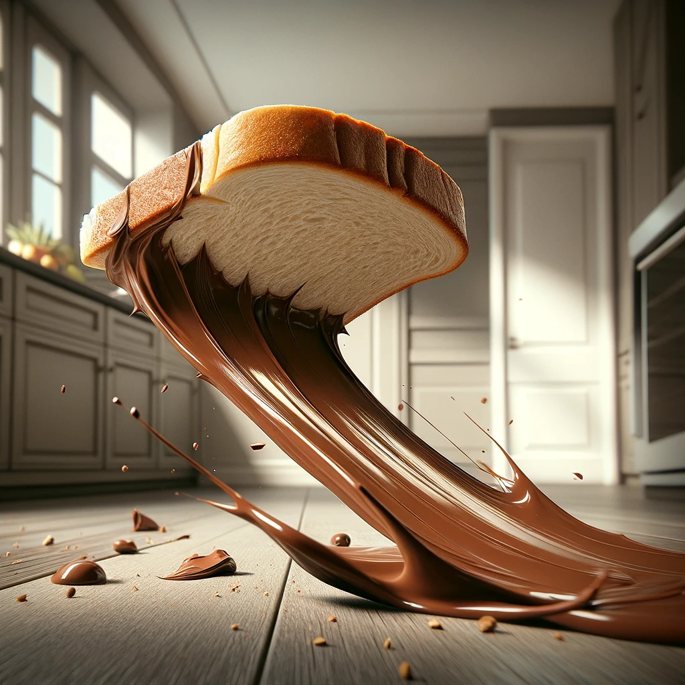
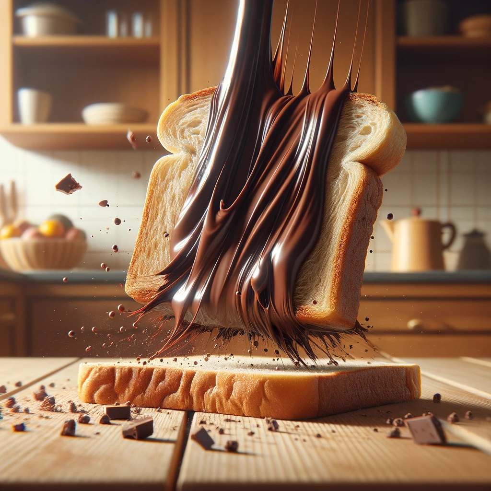
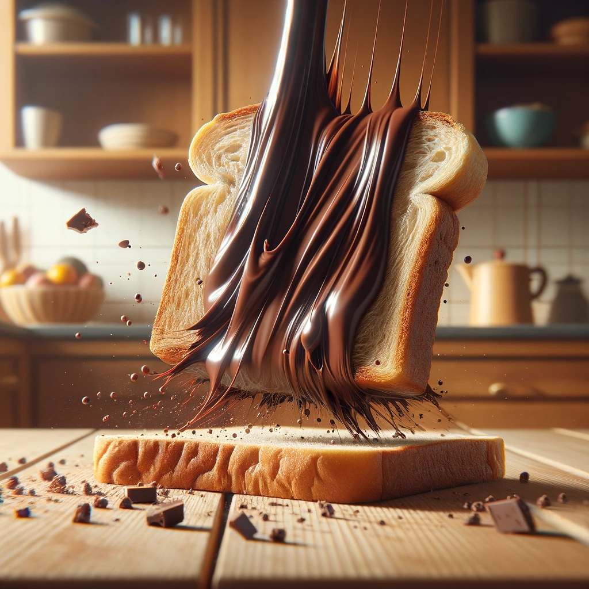

Wiso landet ein Brot mit aufstrich immer auf der verkehrten seite

Allgemeines
Das Phänomen, dass ein bestrichenes Brot oft auf der belegten Seite landet, lässt sich durch die Kombination von Rotationsdynamik und der durchschnittlichen Höhe eines Esstisches erklären. Die Höhe ermöglicht es dem Brot, während des Fallens eine halbe Drehung zu machen, nicht genug für eine volle Drehung, was bedeutet, dass es häufig auf der bestrichenen Seite landet. Zusätzlich macht der Belag die Seite schwerer, was die Chancen erhöht, dass sie unten landet. Dieses alltägliche Missgeschick spiegelt nicht nur physikalische Gesetzmäßigkeiten wider, sondern wird auch oft mit Humor im Sinne des Murphys Gesetzes betrachtet: Was schiefgehen kann, wird auch schiefgehen.
Was wenn beide Seiten belegt sind?

Wenn ein beidseitig belegtes Brot auf den Boden fällt, gibt es keine eindeutige Vorhersage, auf welcher Seite es landen wird. Die Interaktion von Schwerkraft und Trägheit kann zu unvorhersehbaren Drehbewegungen führen, da keine Seite eine dominante Schwere aufweist. Letztendlich bleibt das Ergebnis oft dem Zufall überlassen.
Überraschenderweise landet das Brot auf der belegten Seite. :^)
Das Phänomen, dass ein bestrichenes Brot oft auf der belegten Seite landet, lässt sich durch die Kombination von Rotationsdynamik und der durchschnittlichen Höhe eines Esstisches erklären. Die Höhe ermöglicht es dem Brot, während des Fallens eine halbe Drehung zu machen, nicht genug für eine volle Drehung, was bedeutet, dass es häufig auf der bestrichenen Seite landet. Zusätzlich macht der Belag die Seite schwerer, was die Chancen erhöht, dass sie unten landet. Dieses alltägliche Missgeschick spiegelt nicht nur physikalische Gesetzmäßigkeiten wider, sondern wird auch oft mit Humor im Sinne des Murphys Gesetzes betrachtet: Was schiefgehen kann, wird auch schiefgehen.
Was wenn beide Seiten belegt sind?
